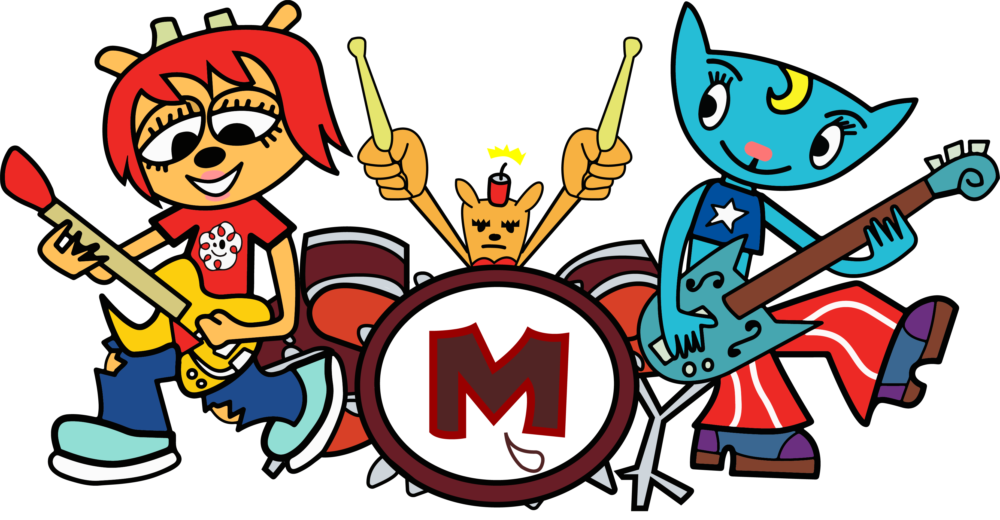

A collection of PaRappa the Rapper and Um Jammer Lammy videos — commercials, TV spots, promotional footage, developer interviews, and gameplay clips preserved from the series' long history. パラッパラッパーおよびウンジャマ・ラミーの動画コレクション。CM、テレビスポット、販促映像、開発者インタビュー、ゲームプレイクリップなど、シリーズの長い歴史から受け継がれてきた映像資料を集めています。

A chronological compilation of commercials spanning PaRappa the Rapper, Um Jammer Lammy, PaRappa the Rapper 2, the McDonald's Japan Happy Meal promotion, and more. The commercials in this compilation range from 1996 through the 2010s, and the majority were aired in Japan. パラッパラッパー、ウンジャマ・ラミー、パラッパラッパー2、マクドナルドのハッピーセットキャンペーンなどのCMを時系列順にまとめたコンピレーション。収録されているCMは1996年から2010年代までに及び、大半は日本で放送されたものです。

Series artist and character designer Rodney Alan Greenblat shares a reel of prototype cutscenes for Um Jammer Lammy, digitised from the original VHS tapes he received during production. The footage captures an earlier Lammy design — a pink, curly-haired version he describes as more lamb-like than the red-haired rocker who made it into the final game — along with an alternate Ma-san library sequence and a hell-themed stage that was cut from the North American release. Uploaded to Greenblat's own YouTube channel on May 10, 2022, with VHS transfers by Reel Revival Film. シリーズのアートディレクター兼キャラクターデザイナーロドニー・アラン・グリーンブラットが、開発当時に受け取ったVHSテープからデジタル化したウンジャマ・ラミーのプロトタイプカットシーン集を公開したものです。映像には最終版の赤髪ロッカーより「子羊らしい」と本人が語るピンクのカーリーヘア版ラミーの初期デザイン、マーさんの図書館シーンの別バージョン、そして北米版ではカットされた地獄テーマのステージなどが含まれています。2022年5月10日にグリーンブラット本人のYouTubeチャンネルで公開され、VHSのデジタル化はReel Revival Filmが担当しています。


Footage from the joint PaRappa the Rapper and Crash Bandicoot advertising campaign that ran from 1996 through 1998. During this period Sony Computer Entertainment positioned its two flagship PlayStation mascots side-by-side in Japanese television spots, print ads, and in-store promotions — leveraging PaRappa's rhythm-game breakout and Crash's platforming stardom to push the PlayStation brand as a whole. The crossover featured both characters appearing together in commercials, collaborative artwork, and co-branded retail displays, and is one of the clearest examples of Sony's late-'90s mascot-driven marketing strategy in Japan. 1996年から1998年にかけて展開されたパラッパラッパーとクラッシュ・バンディクーの合同広告キャンペーンの映像です。ソニー・コンピュータエンタテインメントは、PlayStationを代表する2大マスコットをテレビCM、雑誌広告、店頭プロモーションで共演させ、リズムゲームで人気を博したパラッパとアクションゲームで人気のクラッシュを並べてPlayStationブランド全体を訴求しました。両キャラクターが一緒に登場するCMや共同ビジュアル、コラボ店頭ディスプレイなどが制作され、1990年代後半の日本におけるソニーのマスコット戦略を象徴するキャンペーンとなっています。

"GOT TO MOVE!" is the in-universe MilkCan promotional music video — the closest thing the franchise has to an official MilkCan music video — featuring Lammy on lead guitar, Katy Kat on bass and vocals, and Ma-san on drums performing the title track from the Make It Sweet! album. 「GOT TO MOVE!」は、劇中バンド・ミルクカンのプロモーションPVで、シリーズで唯一に近い「公式ミルクカン・ミュージックビデオ」とも呼べる存在です。リードギターのラミー、ベース＆リードヴォーカルのケイティ・キャット、ドラムのマーさんが『Make It Sweet!』収録のタイトル曲を演奏しています。

"All We Need Is Music" as it appears in Um Jammer Lammy NOW!, the arcade adaptation of Um Jammer Lammy co-developed with Namco and released in Japan in December 1999. The song appears on the I Scream album. 『ウンジャマ・ラミー NOW!』における「All We Need Is Music」の映像です。同作はナムコとの共同開発による『ウンジャマ・ラミー』のアーケード版で、1999年12月に日本で稼働しました。本楽曲は『I Scream』アルバムに収録されています。

On August 26, 1999, Sony Computer Entertainment America threw a pre-release launch event for Um Jammer Lammy at The Roxy in New York City — billed at the time as the first-ever live video-game rock concert. The fictional in-game band MilkCan was brought to life on stage by series creator Masaya Matsuura (keys and lead guitar), Shige Kawagoe (rhythm guitar), Naoto Sugai (drums), Chris Parks (bass), and Yoshihisa Suzuki (keys and manipulator), performing songs from both Um Jammer Lammy and PaRappa the Rapper. Artist and character designer Rodney Alan Greenblat — the creative mind behind the visual world of Lammy and PaRappa — also made an appearance on stage during the show. The English-language voice cast who brought the game to life was on hand as well: Sara Ramirez as Lammy, Michelle Burks as Katy Kat, Dred Foxx as PaRappa, Ryu Watabe as Chop Chop Master Onion / Captain Fussenpepper / Ma-san, Kemba Francis as Baby, Everett Bradley as Paul Chuck, Carla Cook as Teriyaki Yoko, and Keva Hargrove as Rammy. 1999年8月26日、ソニー・コンピュータエンタテインメント・アメリカはウンジャマ・ラミーの北米リリースに先駆け、ニューヨーク市のザ・ロキシー（The Roxy）でプレリリース・ローンチイベントを開催しました。当時史上初のビデオゲーム・ライブロックコンサートと銘打たれ、ゲーム内の架空バンドミルクカン（MilkCan）がステージ上で実演で蘇りました。演奏メンバーはシリーズの生みの親松浦雅也（キーボード／リードギター）、Shige Kawagoe（川越秀毅）（リズムギター）、Naoto Sugai（菅井直人）（ドラム）、クリス・パークス（ベース）、Yoshihisa Suzuki（鈴木義久）（キーボード／マニピュレーター）で、『ウンジャマ・ラミー』と『パラッパラッパー』の両作品から楽曲を披露しました。ラミーとパラッパのビジュアル世界を生み出した立役者、アーティスト兼キャラクターデザイナーロドニー・アラン・グリーンブラットもショーの中でステージに登場しました。英語版の声優キャストも参加しており、ラミー役のサラ・ラミレス、ケイティ・キャット役のミシェル・バークス、パラッパ役のドレッド・フォックス、タマネギ先生／キャプテン・フッセンペッパー／マーさん役のリュウ・ワタベ（Ryu Watabe）、ベイビー役のケンバ・フランシス、ポール・チャック役のエヴェレット・ブラッドリー、テリヤキ・ヨーコ役のカーラ・クック、そしてラミー（Rammy）役のキーヴァ・ハーグローヴが登壇しました。